Operating Documentation
Direction 5193574-800, Rev# 22
LightSpeed 7.X Service Methods
Module Version 1.0, Version Date 7/24/13
Operating Documentation |
This guide discusses Console component access and lifting. It describes and illustrates steps to aid in the removal and installation of the components in the GOC6.6 chassis. By following these guidelines, the risk for injury from lifting heavy computer components will be minimized and allow for a single engineer to safely complete these tasks.
Illustration 1: Console (GOC6.6)
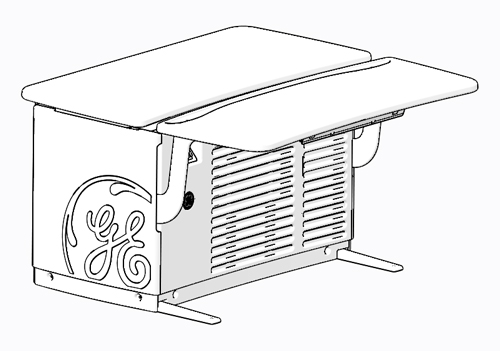
| ||||
| FOLLOW ALL REQUIRED SAFETY AND PPE PROCEDURES CUSTOMARY FOR YOUR ORGANIZATION WHEN WORKING ON THIS PRODUCT | ||||
Apply LOTO to System. For procedures, see Equipment Service - Lockout-Tagout-PPE.
To allow for the best access to the computer and components in the Console, the GOC6.6 Chassis Keyboard Table should be removed from the chassis and set aside. This allows better access to the front of the chassis without interference.
Illustration 2: Console - GOC6.6 Chassis Keyboard Table
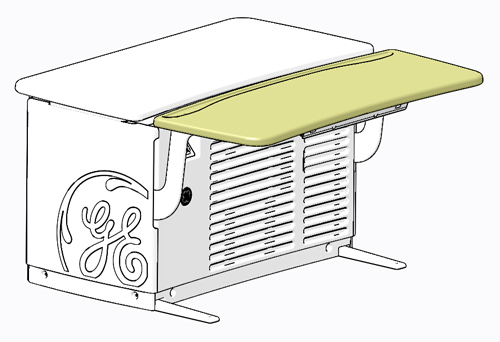
| NOTE: | Before performing this task, ensure there is a place for the GOC6.6 Chassis Keyboard Table to reside without blocking emergency egress path, and there is adequate room to service product(s). |
By pulling on the two (2) release handles under the GOC6.6 Chassis Keyboard Table, the keyboard table can easily be removed from the support brackets without the use of tools. After releasing the GOC6.6 Chassis Keyboard Table, lift the keyboard table away from its support brackets and set it aside being careful not to chip the laminate surface.
Illustration 3: GOC6.6 Chassis Keyboard Table Release
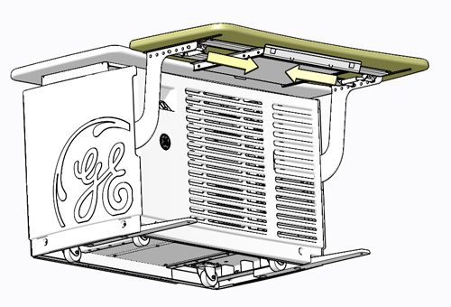
Illustration 4: GOC6.6 Chassis Keyboard Table Removal
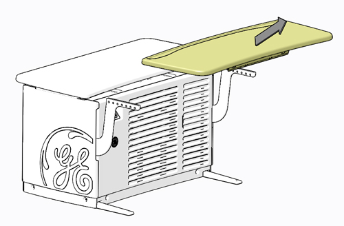
Remove the Console front cover. Refer to Replacement → Console (GOC6.6) → Console Cover Removal and Installation instructions from the procedure list. Unobstructed access should now be available to the GOC6.6 chassis components.
| ||||
| POTENTIAL FOR INJURY TO SERVICE PERSONNEL | ||||
| THE COMPUTER IN THE Console (GOC6.6) CAN WEIGH IN EXCESS OF 25.2 kg (55.6 Lb). | ||||
| DEPENDING ON YOUR HEIGHT AND ACCESS TO EQUIPMENT REMOVAL/INSTALLATION, LIFTING ASSISTANCE MAY BE REQUIRED. USE YOUR JUDGEMENT TO DETERMINE IF LIFT ASSIST OR A SECOND PERSON MAY BE REQUIRED TO ASSIST IN REMOVAL AND INSTALLATION. |
Only the Console Computer, classified as Field Replaceable Unit (FRU), needs special attention due to its associated weight. The following illustration shows this computer’s location in the center of the GOC6.6 chassis.
Illustration 5: Console Computer Location
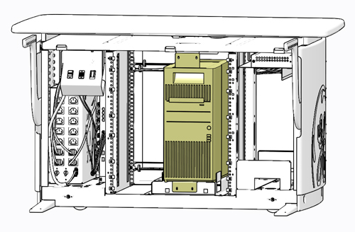
| NOTE: | Though this guideline is meant to address safe access and lifting condition of the aforementioned component, this guideline also illustrates the best method for accessing all the components inside the Console computer and GOC6.6 chassis. All of the Console components are removed from the front of the GOC6.6 chassis. Access to the rear of the GOC6.6 chassis is only necessary to disconnect cabling from these components. |
Reference the Replacement → Console (GOC6.6) → NIO64HD Computer Replacement HP z800 procedure of this manual for details concerning mounting hardware and cable interconnects.
Supplied with the Console is a special Service Platform that is to used whenever accessing the Console computer or when removing or installing a replacement computer. The use of this Service Platform eliminates improper body positioning when accessing or lifting the Console computer.
Illustration 6: Service Platform Storage Location - Right Side Compartment of GOC6.6 Chassis
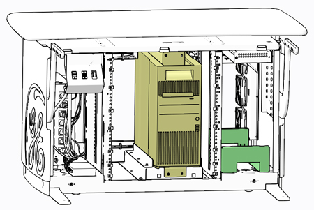
Remove Service Platform and place it in front of the Console computer. Note: The service platform has tabs which engage with console frame to keep the platform in place. Make sure the tabs have fully engaged with console frame.
Illustration 7: Service Platform Removal
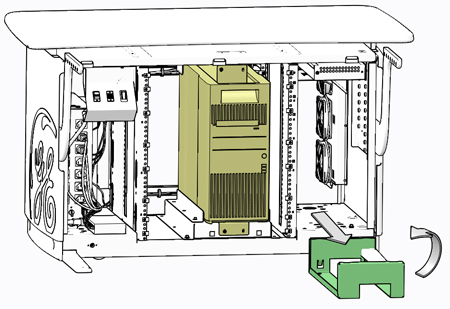
Illustration 8: Service Platform Placement
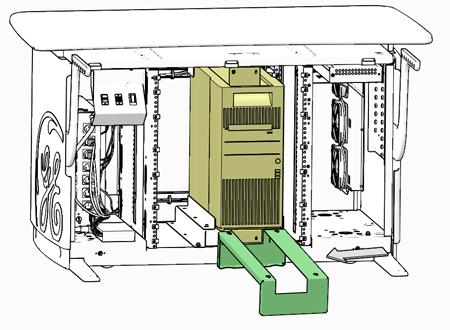
Remove necessary hardware from Console computer’s mounting brackets and slide the computer onto the service platform, using the handle built into the top surface of the computer’s chassis.
Illustration 9: Console Computer Removal from GOC6.6 Chassis - No Lifting Required
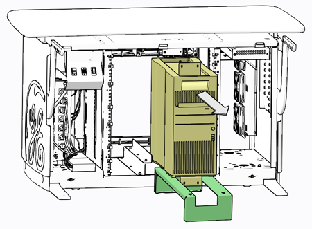
Illustration 10: Console Computer Placement on Service Platform
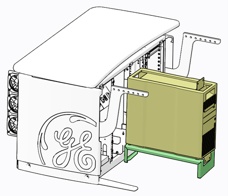
Access to the Console computer is now possible without interference from the GOC6.6 chassis. Follow prescribed component replacement procedures located in the Replacement chapter of this manual for details concerning FRU replacement inside the Console computer.
In the event you believe you are not capable or allowed to lift the heavy computer, request that a second person assist in the computer removal and installation.
Otherwise, lift the Console computer by the two handles built into the top surface of the computer’s chassis.
Illustration 11: Console Computer Lift Points (A & B)
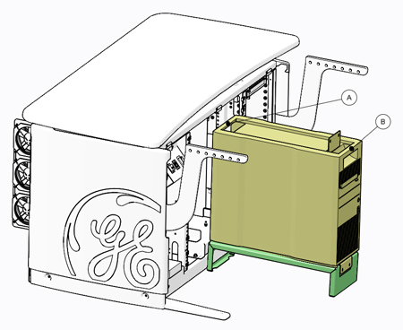